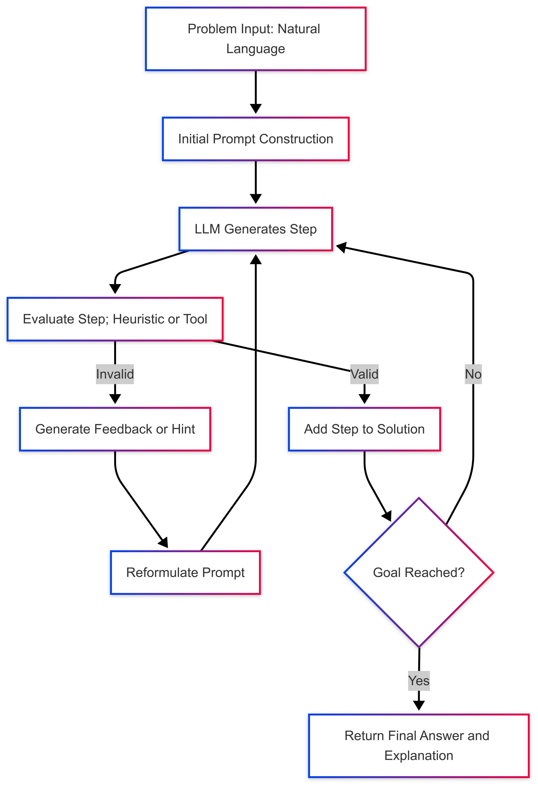

Survey comparing Lean 4-based LLM provers (Kimina-Prover, DeepSeek-Prover, Lyra) and Lean benchmarks such as miniF2F against informal mathematical reasoning.
Abstract
Large Language Models (LLMs) have demonstrated impressive capabilities in structured reasoning and symbolic tasks, with coding emerging as a particularly successful application. This progress has naturally motivated efforts to extend these models to mathematics, both in its traditional form, expressed through natural-style mathematical language, and in its formalized counterpart, expressed in a symbolic syntax suitable for automatic verification. Yet, despite apparent parallels between programming and proof construction, advances in formalized mathematics have proven significantly more challenging. This gap raises fundamental questions about the nature of reasoning in current LLM architectures, the role of supervision and feedback, and the extent to which such models maintain an internal notion of computational or deductive state. In this article, we review the current state-of-the-art in mathematical reasoning with LLMs, focusing on recent models and benchmarks. We explore three central issues at the intersection of machine learning and mathematical cognition: (i) the trade-offs between traditional and formalized mathematics as training and evaluation domains; (ii) the structural and methodological reasons why proof synthesis remains more brittle than code generation; and (iii) whether LLMs genuinely represent or merely emulate a notion of evolving logical state. Our goal is not to draw rigid distinctions but to clarify the present boundaries of these systems and outline promising directions for their extension.
Problem
LLMs perform well on code generation and informal competition mathematics, but formal proof synthesis remains much more brittle. The review asks why this gap exists and what it suggests about how LLMs represent reasoning state.
Approach
The review surveys LLM training pipelines, mathematical benchmarks (AIME 2024, PGPS9K, miniF2F, FrontierMath), and recent models for informal and formal mathematics. It compares Lean-targeting provers such as Kimina-Prover, Lyra and DeepSeek-Prover by goal representation, premise retrieval, and feedback source. It also covers autoformalization and iterative refinement loops. The discussion is organized around three questions: traditional versus formalized mathematics, why proving is harder than coding, and whether LLMs track logical state.

Figure 1: Typical interaction loop between a formal prover and a Large Language Model is the case of formal mathematics. The LLM proposes a proof step (e.g., a tactic), which is checked by an external proof assistant that explicitly maintains and updates the proof state. Unlike standard reinforcement learning loops with an evolving external environment, state transitions here are symbolic and tool
Results
The authors argue that proof synthesis is harder than coding for two main reasons. Proof errors are less tolerant of partial correctness, and formal corpora are small. Proof state is maintained by the proof assistant rather than by the model, which suggests LLMs mostly emulate rather than represent evolving deductive state.